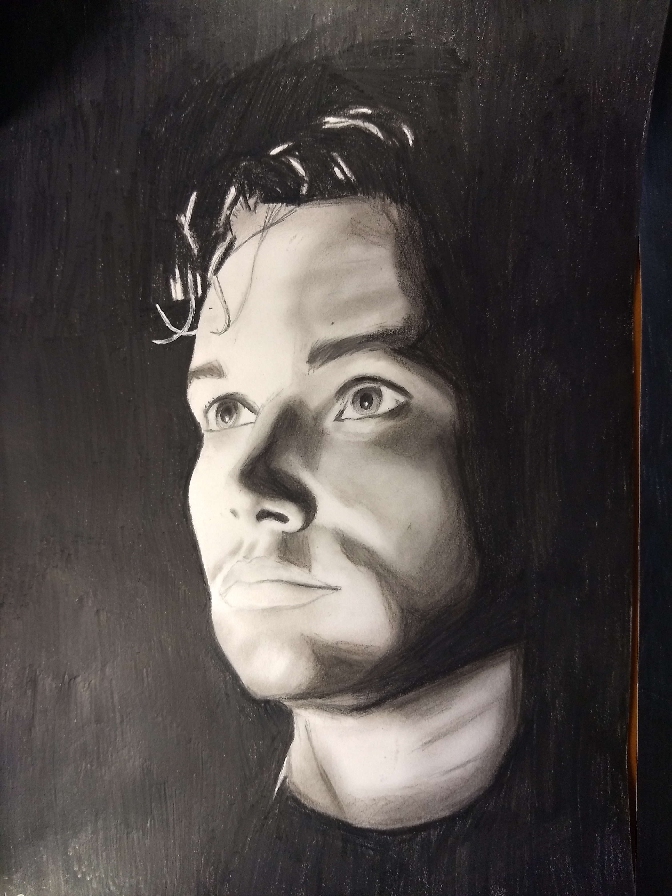
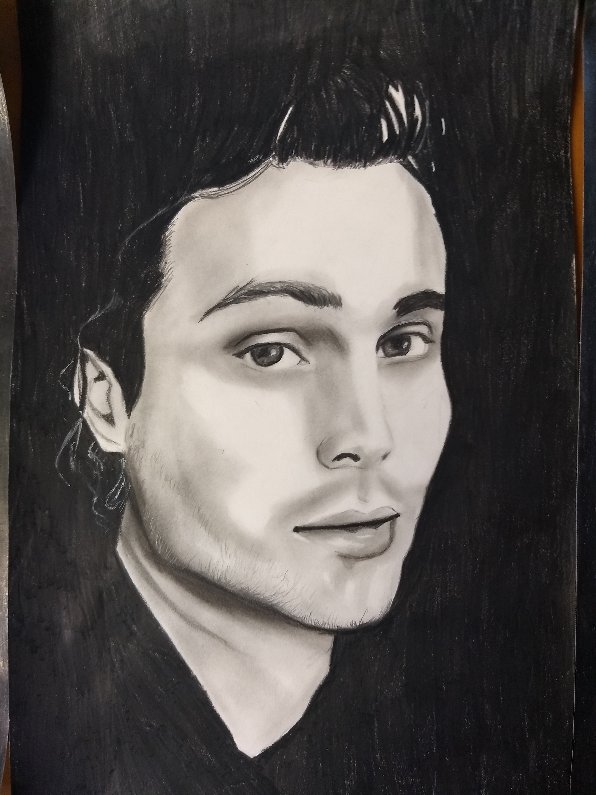

My Interests
About websiteHome page
My main interest is art. I like most artistic things and I tend to draw a lot of people portraits.
I draw a lot of celebrities portraits and each portrait, depending on the quality can take between 2 - 15 Hours.
The materials I usually use for a portrait are
These are a few of my artworks:


 Visit Whangarei Falls
Visit Mt Taranaki